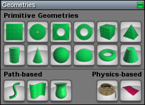

Geometries
From C4 Engine Wiki
A geometry is a renderable triangle mesh that can make up part of a scene in the C4 Engine. All solid objects that can be rendered in the scene or participate in static collision detection are composed of geometry nodes. There are a variety of primitive geometry types that can be drawn in the World Editor, and their geometric shapes can be further edited through CSG operations. Arbitrary triangle meshes can be imported from external sources.
Geometries Page

The Geometries Page is a tool page in the World Editor that can be found under the Object tab.
As shown in Figure 1, the Geometries Page contains tools for creating various geometry nodes. The geometry types are grouped into primitive geometries, path-based geometries, and physics-based geometries. Note that the path-based geometries can only be drawn if a path node is first selected. See the Paths Page.
Geometry Settings
The following settings are available for all geometry nodes.
|
Setting |
Description |
|
Rendering Flags | |
|
Rendering mode |
Selects a special rendering mode for the geometry.
|
|
Render with fog |
Apply fog to the geometry when it is rendered (if fog is present in the environment). |
|
Render cube light projection |
If this is not checked, and the geometry is illuminated by a cube light, then the cube light is treated as a plain point light when rendering the geometry. This prevents the cube light's projected texture from being cast onto the geometry. Unchecking this option is useful for the geometry surrounding a cube light source when that geometry actually generated the light's projected texture and should not be receiving its own shadows. |
|
Render only with ambient light |
The geometry is rendered with ambient lighting, but not with any direct lighting from any light sources. |
|
Render as a decal |
The geometry is rendered as a decal with its depth offset toward the camera so that it can be positioned coplanar with other geometries without depth-testing artifacts. |
|
Geometry is invisible |
The geometry is not rendered, but it still participates in collision detection, if enabled. |
|
Use paint space in instancing world |
For geometry nodes that are part of an instanced world, this setting allows them to use the paint space connected to the instance node's |
|
Apply motion blur |
Motion blur is applied to the geometry. If this is not checked, then zeros are written to the velocity channels of the structure buffer wherever the geometry is frontmost. |
|
Allow surface markings |
Marking effects can be applied to the geometry. Marking effects are never applied if the geometry is invisible, regardless of this setting. |
|
Use full polygon markings |
Marking effects are always composed of polygons exactly matching those in the geometry and are not clipped to the marking's boundary planes. |
|
Detail Settings | |
|
Enable shader detail level |
Shader level-of-detail is enabled for the geometry. |
|
Shader detail bias |
Specifies a bias to apply to the shader LOD selected for the geometry when it is rendered and shader detail level is enabled. Lower-numbered detail levels correspond to higher quality, so positive bias values cause the lower-quality LODs to be selected closer to the camera, and negative bias values have the opposite effect. If the material applied to the geometry does not have multiple levels of detail, then this setting has no effect. |
|
Geometry detail bias |
Specifies a bias to apply to the geometric LOD selected for the geometry when it is rendered. Lower-numbered detail levels correspond to higher quality, so positive bias values cause the lower-quality LODs to be selected closer to the camera, and negative bias values have the opposite effect. If the geometry does not have multiple levels of detail, then this setting has no effect. |
|
Render stencil shadow |
Stencil shadows are enabled for the geometry for light sources that can cast them. |
|
Render in shadow map |
The geometry is rendered in shadow maps for light sources that can use them. If shadow mapping and stencil shadows are both enabled, then shadow mapping takes precedence for depth lights and landscape lights. |
Primitive Settings
The following settings are available for primitive geometry nodes.
|
Setting |
Description |
|
Primitive Geometry Settings | |
|
Build endcaps |
For geometries that have endcaps, indicates that the endcaps should be included in the triangle mesh. |
|
Build inverted |
Indicates that the triangle mesh should be built inverted so that the triangles face inward. |
|
Build detail levels |
Specifies how many levels of detail to build. |
|
X subdivisions |
Specifies the number of polygonal subdivisions to create in the x direction for the highest-quality level of detail. |
|
Y subdivisions |
Specifies the number of polygonal subdivisions to create in the y direction for the highest-quality level of detail. |
See Also
-
Geometryclass -
GeometryObjectclass